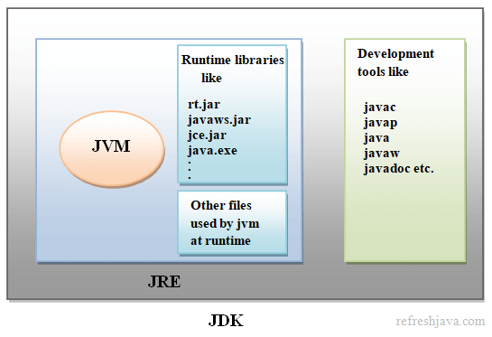

Purpose: The complete software development package for writing,
compiling, and debugging Java applications. It is for developers.
Key Function: Provides all the tools needed to create Java programs, in addition
to being able to run them.
Physical Existence: Exists physically on your computer as the main Java installation
directory.
What it Contains:
The JRE (so it can run programs).
Development Tools: Compiler ( javac ), Debugger ( jdb ), Documentation Generator (
javadoc ), Archiver ( jar ), and other tools.
Platform Dependency: Platform-dependent (you need a different JDK for Windows, Linux, and
macOS).
Compilation Requirement: You need the JDK to compile a .java source file
into a .class bytecode file. Once compiled, the program can be run on any system with just a JRE.
Analogy: The car factory. It contains everything the car has (the JRE)
plus all the tools, robots, and engineers (development tools) needed to build the car.

2. JRE (Java Runtime Environment)
Purpose: Provides the environment and necessary components to run existing, compiled Java
applications ( .class files). It is for end-users, not developers.
Key Function: Contains everything needed to execute a Java program, but nothing to create
one.
Physical Existence: Exists physically on your computer. It can be found in the Java
installation directory. In modern JDK installations, a JRE is often created inside the JDK directory.
What it Contains:
The JVM (for execution).
Libraries and Core Classes (e.g., rt.jar files for packages like java.lang.java.util).
Other Support Files (property files, configuration files).
Platform Dependency: Platform-dependent (you need a different JRE for Windows, Linux, and
macOS).
Analogy: The entire car. It includes the engine (JVM), fuel, wheels, and body (libraries)
needed to get you from A to B (run the program).
3. JVM (Java Virtual Machine)
Purpose: The core engine that loads and executes compiled Java programs (bytecode) in
memory.
Key Function: Makes Java platform-independent by translating bytecode into machine code for
the specific operating system.
Physical Existence: Does not exist as a separate, installable software package. It is a
software-based execution environment that is part of the JRE.
What it Contains: Memory areas (Heap, Stack), a class loader, an execution engine
(Interpreter, JIT compiler), and a garbage collector. It does not contain development tools like
javac.
Analogy: The engine of a car. It's the part that actually makes the car run.